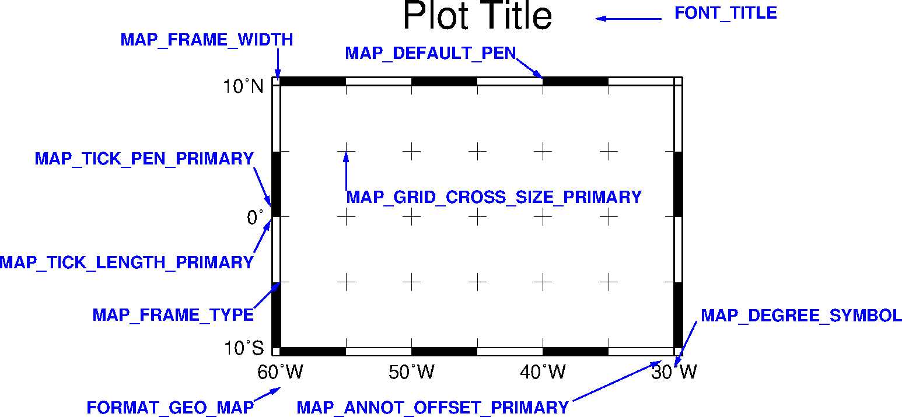
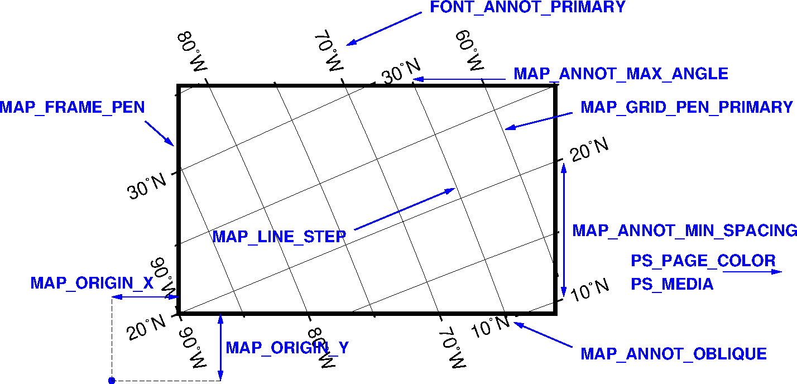
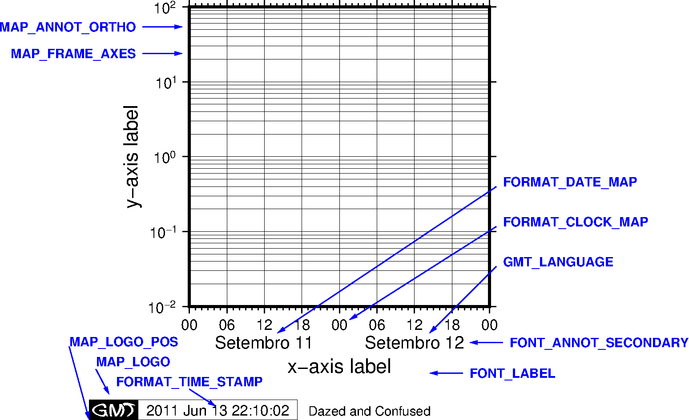

GMT中文手册
v6.0
v5.4
目 录
1 简介
2 安装
3 GMT初探
4 GMT基础
5 表数据
6 网格文件
7 CPT文件
8 标准选项
9 投影方式
10 配置参数
10.1 配置参数简介
10.2 配置参数示例
10.3 FONT参数
10.4 MAP参数
10.5 COLOR参数
10.6 DIR参数
10.7 FORMAT参数
10.8 IO参数
10.9 PROJ参数
10.10 PS参数
10.11 TIME参数
10.12 其他参数
11 地学数据集
12 中文支持
13 模块手册
14 绘图示例
15 API
16 附录
外部链接
PDF下载
源代码
GMT中文社区
联系我们
GMT中文手册
首页
»
10 配置参数
»
10.2 配置参数示例
编辑本页
10.2 配置参数示例
¶
下面的图展示了常用的用于控制绘图效果的配置参数。
Source
Code

Source
Code

Source
Code
